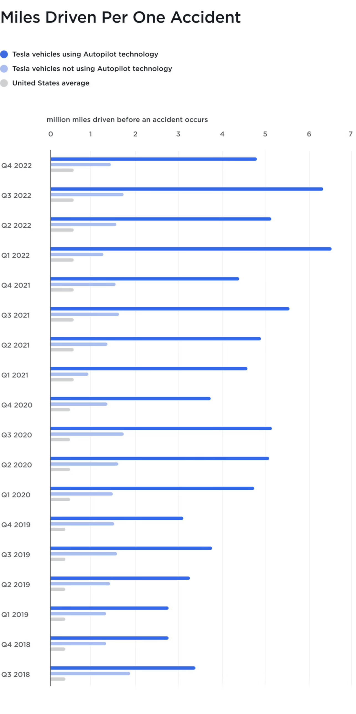

Self-driving cars work by using sensors to detect their surroundings. They are able to communicate with other self-driving vehicles and their environment and respond accordingly. Unlike human drivers, the sensors don't get distracted or tired. They are able to detect red lights and stop signs and wait until it is safe for them to proceed. They provide an opportunity to eliminate major road accident causes such as speeding, drink driving, tiredness, reckless and distracted driving, running red lights and stop signs (Baecker, 2019). Without these factors, the roads should be safer.
Self-Driving cars have the ability to reduce road traffic accidents by eliminating accidents caused by human error. Studys agree that at least 90% of car accidents are caused by human error (Baecker, 2019; Coicheci & Filip, 2020; Liu et al., 2019). This means that self-driving cars have the opportunity to eliminate 90% of car accidents. Less accidents means less fatalities. With an estimated 1.3 million road related deaths a year, self-driving cars could provide a significant decrease in this number (WHO, 2022).
Self-driving cars are extensively tested in simulations to find and fix any bugs in the technology. These tests increase confidence that self-driving cars will provide a safer road, with less accidents. Waymo is an automated driving system created by Google that has been tested with simulated real-world fatal collision scenarios. They were able to reconstruct 72 crash simulations with the Waymo driver tested as both the crash initiator and the responder. From these simulations they found their self-driving vehicles prevented initiation of every fatal collision. The results showed the system prevented approximately 82% of collisions and mitigated a further 10% of collisions when responding to the actions of the crash (Scanlon et al., 2021). This study shows there is potential for self-driving cars to improve road safety by reducing road traffic accidents.
Furthermore, Waymo has reached one million miles of rider-only operations, meaning one million miles of driving with no human driver behind the wheel, with no reported injuries. In these one million miles of driving, there were only two accidents that were CISS-comparable, both being front to rear collisions. Of these two accidents, one was caused by a distracted human driver on their cellphone colliding with the rear of the Waymo vehicle. This is a significant milestone for fully autonomous vehicles with the low frequency and low severity of collisions indicating that Waymo will reduce the frequency of severe collisions, increasing the safety of human passengers (Victor et al., 2023).
There has been similar success in partially autonomous cars in reducing traffic collisions. Tesla have been recording the number of miles driven per one accident as seen in Figure 2. Comparing the number of miles driven by Tesla vehicles using their Autopilot technology to ones not using this technology, there is a significant difference with those using the Autopilot technology driving more miles per one accident. This shows that these partially autonomous vehicles have a significantly lower accident rate and could be considered safer than non-autonomous vehicles that rely fully on the human driver (Tesla, 2023).
Figure 2 Tesla Vehicle Safety Report
Copyright 2023 by Tesla
Made 24 May 2023thanks to W3C for tutorial and adapted code from Style Examples
also thanks to WDN for HTML and CSS resources and any adapted code snippets from Mozilla Developer Network